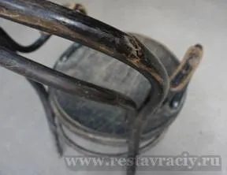
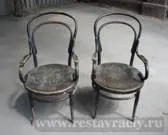
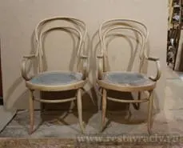
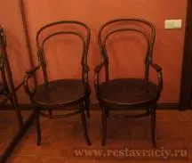

Мягкая мебель
Реставрация венского стула
Реставрация венских стульев, имеет ряд особенностей, обусловленных технологией изготовления самой гнутой мебели.


В материале мастерской
Фотографии и детали



Открыть снимок у мастерской


Открыть снимок у мастерской


Открыть снимок у мастерской
Есть похожая вещь?
Подберите ракурсы для предварительной оценки.